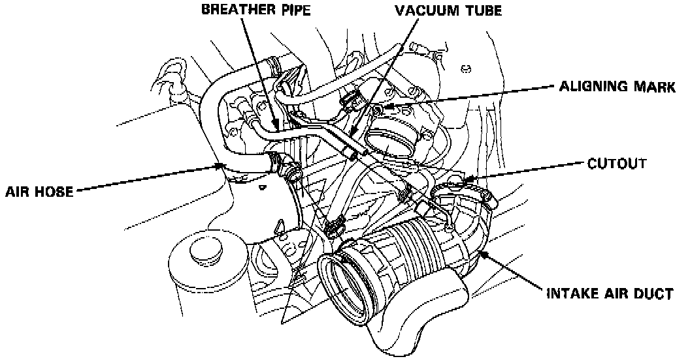
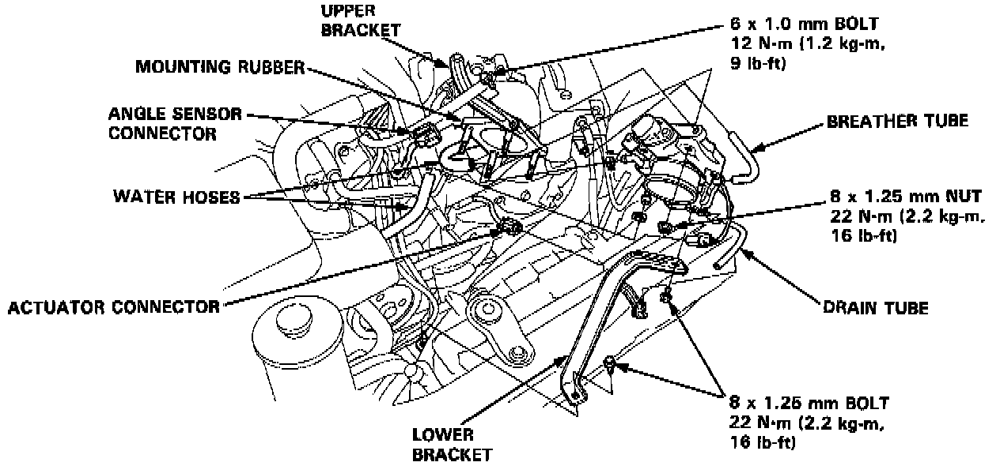

Throttle Control Actuator: Service and Repair
TCS Control Valve Assembly
CAUTION: Be careful not to damage the TCS control valve when handling the TCS control valve assembly.
Removal
Disconnect the vacuum tube, breather pipe and air hose from the intake air duct. Loosen the intake air duct band screws and remove the intake air duct.

Disconnect the TCS control valve angle sensor connector and actuator connector. Remove the drain tube from the clamp on the TCS control valve lower bracket. Disconnect the water hoses and breather tube from the TCS control valve body. Remove the TCS control valve brackets. Remove the four nuts and the TCS control valve assembly from the mounting rubber.

Installation
Install the TCS control valve onto the mounting rubber and tighten the nuts. Temporarily install the TCS control valve brackets.
Tighten the upper bracket bolt first, then tighten the lower bracket bolts. Install the removed parts in the reverse order of removal.
NOTE: Align the cutout in the air intake duct with the aligning mark on the TCS control valve body.